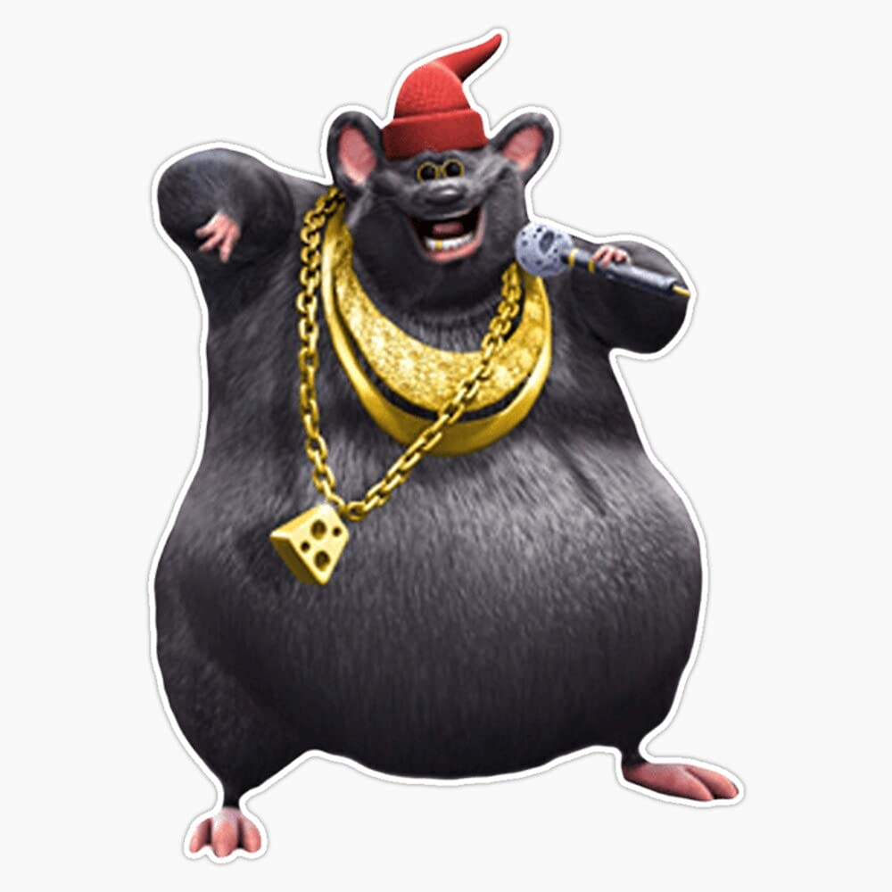

- Without Me
- Mockingbird
- Rap God
- Bombastic
- Bombastic
- Bombastic
- Me enamore de ti
- Bailando bachata
- Humanos a marte
| Portrait | Name | Birth Date / Death Date | Profession | Work | Audio |
|---|---|---|---|---|---|
|
Marshall Bruce Mathers III a.k.a Eminem | October 17th, 1972 - Not yet | Rapper | Popular songs:
|
|
|  | Mr. Bombastic | September 29th, 2007 - 2011 | Rapper | Popular songs:
|
|
| Elmer Figueroa Arce a.k.a. Chayanne | June 28th, 1968 | Composer and Singer | Popular songs:
|